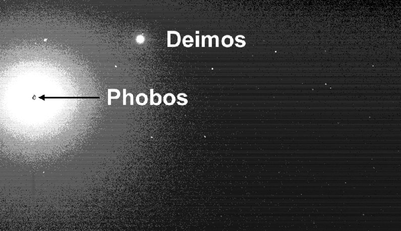

Facts of Mars
| Earth | Mars | |
|---|---|---|
| Average Distance from Sun | 93 million miles | 142 million miles |
| Average Speed in Orbiting Sun | 18.5 miles per second | 14.5 miles per second |
| Diameter | 7,926 miles | 4,220 miles |
| Tilt of Axis | 23.5 degrees | 25 degrees |
| Length of Year | 365.25 Days | 687 Earth Days |
| Length of Day | 23 hours 56 minutes | 24 hours 37 minutes |
| Gravity | 2.66 times that of Mars | 0.375 that of Earth |
| Temperature | Average 57 degrees F | Average -81 degrees F |
| Atmosphere | nitrogen, oxygen, argon, others | mostly carbon dioxide, some water vapor |
| Number of Moons | 1 | 2 |
Spin off of mars
Click here for image
Moons of Mars
Phobos and Deimos
Mars has two small moons: Phobos and Deimos. Phobos (fear) and Deimos (panic) were named after the horses that pulled the chariot of the Greek war god Ares, the counterpart to the Roman war god Mars. Both Phobos and Deimos were discovered in 1877 by American astronomer Asaph Hall. The moons appear to have surface materials similar to many asteroids in the outer asteroid belt, which leads most scientists to believe that Phobos and Deimos are captured asteroids